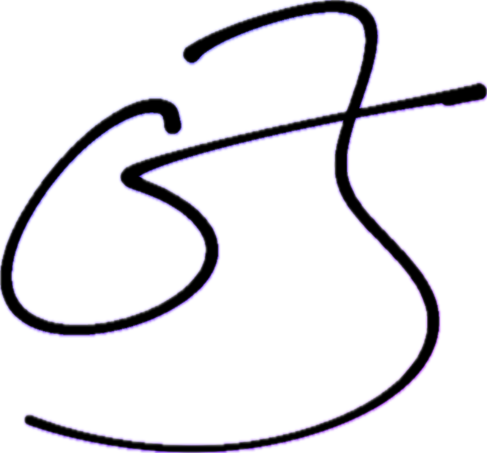

I build agentic systems that behave less like toys and more like operational infrastructure — getting from intent to a reviewable result with as few manual steps as possible. The human still steers. The agents do the heavy lift.
Everyone wants the leverage. Almost no one has a workflow that holds. The problem is rarely the model — it's the distance between a good idea and something a team can trust, review, and ship.
People are genuinely interested — but they don't know where to start.
Teams try the tools — but the workflow never sticks.
Leaders want leverage — but they don't want chaos.
Developers want speed — but not sloppy output they have to babysit.
The goal is not to remove people from the process. It's to remove the unnecessary touches between intent and a reviewable result.
The form changes — the philosophy doesn't. I meet teams where they already work, so the output is something they can inspect, approve, and put into their workflow.
Agents that understand the operating environment, not just the task in front of them.
Humans stay focused on planning, judgment, and the final decision.
Outputs designed to be understood quickly — by clients, executives, and operators alike.
Rapid builds that still respect maintainability, security, and real team adoption.
If your team wants to turn scattered experiments into reliable workflow leverage, I can help scope, prototype, and operationalize the right agentic system.